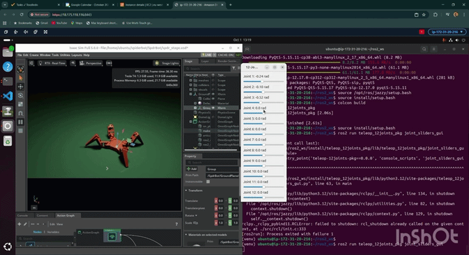
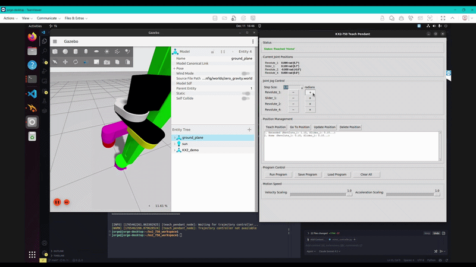

Spider Bot Running on NVIDIA Isaac Sim
Built a spider model for simulation, using ROS2 for control and testing in NVIDIA Isaac Sim, enabling rapid iteration of locomotion algorithms.
Isaac Sim, ROS2, URDF
Explore more of this
Three related projects focused on simulation environments, digital twins, and practical deployment.
Back to main portfolio
Built a spider model for simulation, using ROS2 for control and testing in NVIDIA Isaac Sim, enabling rapid iteration of locomotion algorithms.
Isaac Sim, ROS2, URDF

Simulated LiDAR in Isaac Sim, sending real-like data to an AGV running ROS2. This enabled testing of navigation and obstacle-avoidance algorithms in a virtual environment.
ROS2, Sensor Models, Python

Using the Modern Robotics approach by Kevin M. Lynch, I developed a laboratory robot model ready to be used in environments such as Gazebo, CoppeliaSim, or Isaac Sim.
Gazebo, ROS2, URDF, Robotics, Direct and Inverse Kinematics